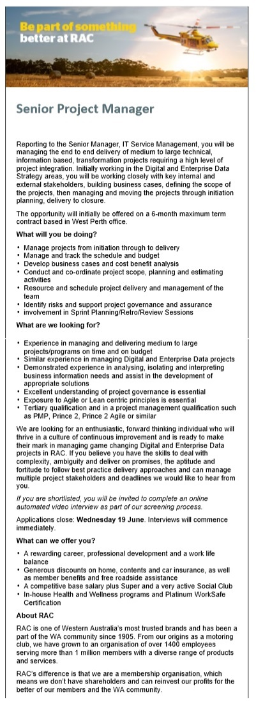
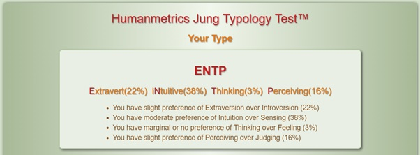
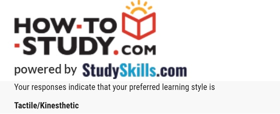
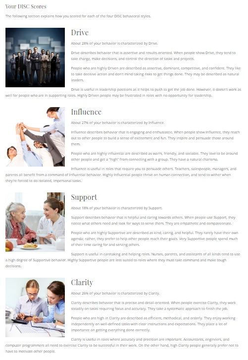

Lauren's Awsome IT Profile

Lauren Jane Ralley
S3805366
S3805366@student.rmit.edu.au
A mature age student, that doesn't feel particually mature!
I love the outdoors and spent much of my youth adventuring coastal New South Wales.
These days I just adventure the world with my pup Aura.
Interest in IT
What is your interest in IT? When did your interest in IT start? Was there a particular event or person that sparked your interest? Outline your IT experience (if any).
My key fascination with Information Technology is the efficiency it brings to our everyday lives. It allows for fast and arcuate disruption of data on a mass scale permitting us as humans to develop and grow intellectually, culturally and economically. From a young age I was exposed to the wonders of Microsoft office, as someone who has always had trouble with spelling Word was a dream come true! I think what truly sparked my interested was when I was told "don't worry, you don't have to learn how to spell everyone will be using spellcheck by the time you hit the workforce". Over the years I've engaged with various forms of technology and always found myself picking up on trends and troubleshooting issues with ease. I've worked with various software in my working life although what really pushed me towards this career was watching the development my organisations core software and migration from an outdated website to a more advanced user-friendly website. My primary interest in Information Technology is the ease it offers end users and my admiration goes to those who are involved in the development process.
Why did you choose to come to RMIT?
Being a Melbournian Im' aware of the great reputation RMIT has in the community. Having many friends and colleagues previously studied through RMIT, many of whom completing courses relating to Information Technology, it was an easy choice to enrol! I found when working with web developers and business representatives I was missing key pieces of information, this lead me to enrolling in a Bachelor of Information Technology specifically. RMIT will provide me with the confidence and skills I need to reach my professional goal of being a Project Manager.
What do you expect to learn during your studies?
I expect to learn practical and theoretical knowledge and skills relating to the Information Technology industry that can be applied to various situations both professionally and personally. I will advance my ability to resolve issues with and understand software while developing the fundamentals of software development. I expect to gain a deeper understanding of the legal and ethical requirements and restraints an organisation may face when improving their information technology systems and present clear solutions to these barriers. I hope to get a greater understanding of all the roles available to IT professionals to not only determine if they are right for myself but make it easier to work with these individuals in the future. The combination of this knowledge will form the essential skills required to become an incredible Project Manager.
Ideal Job
This is a link a Lauren's future job! (SEEK, 2019) A description of the position, and particularly what makes this position appealing to .
This role has been created to delivery a project, there is a clear objective outlined in this advertisement. The transformation project requires a Senior Project Manager to coordinate with key stakeholders to determine the requirements and desired outcomes of the project, aid in the development and finally implement of the product. The position is responsible for resource distribution and scheduling, this area of management is something that I enjoy and hope to do in the future. I find it desirable to be controlling and tracking the progress of a project as it's very rewarding delivering a project on time, in budget and to the satisfaction of all stakeholders.
RACWA is looking for a Senior Project Manager that demonstrated experience in similar roles with formal tertiary education. The individual must be results and deadline orientated with a drive to innovate and revolutionise. They would like someone who has not only holds a tertiary qualification but also has undertaken some formal project management education. Their previous experience would include working on Digital and Enterprise Data projects incorporating an Agile or Lean methodology.
I currently possess a passionate and pioneering attitude towards the development and improvement of an organisations Data governance. I have experience in deciphering a business's needs to implement a solution and have been exposed to projects that applied an Agile approach. I have experience tracking budgets and holding myself accountable to scheduled deadlines.
After the completion of my Bachelors of Information Technology I intend on working on various projects as a Business Analyst. Providing support to the project manager and working closely with business representatives to deliver projects. After sufficient experience is gained, I intend on receiving a certification from the Project Management Institute. This would involve 4,500 hours of leading projects professionally, 35 hours formal education retaining to project management and the completion of examinations. (Pmi.org, 2019)
Personal Profile
Myers Briggs Test
Please click here for detailed explanation of these results (Humanmetrics.com, 2019)
Learning Syle Test
Please click here for detailed explanation of these results (How-To-Study.com, 2019)
DISC Score
Please click here for detailed explanation of these results (Truity, 2019)
My results give me a greater understanding of the way in which I operate in the workplace and as part of a team. I've understood my learning style for many years although it was nice to be verified that I'm a kinaesthetic learner. I've always found the need to take a hands-on approach and engage my whole body and mind when engaging with a new task, my standing desk has proved to be very useful! The results from the DISC quiz also came as no surprise to me, I've always valued drive and been results orientated. It was fascinating to see the results from the MGTI as I would've rated myself highly in Sensing over Intuition as well as Judging over Perceiving. It's valuable to know that I am more flexible and theoretical than I may have assumed.
We all work in unique ways, understanding our personal motivations, strengths and soft skills will assist us in becoming more efficient and productive professionally. My test results reflect that my communication style is objective and refined and I thrive in teams that recognise my ideas. As I learn kinaesthetically it's important when working in a team that I allow those who learn visually and auditorily the time to understand and question topics before breaking away to commence work. Intuitively I will want to take a hands-on approach so I must tailor my reactions to ensure the team is on the same page.
It's important to attempt to create a balanced team to avoid conflicts or lack of determination. When establishing a team a fundamental understanding of the key objectives are important, matching people with somewhat similar ambition is advantageous as each member will contribute to a common goal. Being someone future driven, represented in by my high score in Intuition from the MBTI, it's ideal I belong to a team who is also motivated by invocation and results. Some of the characteristics demonstrated in my personality tests represent somewhat of a leader, with Drive and Influence rating highly, this would create a barrier if I were to play a supporting role in a team.
Project
Im structuring this project around the necessity of all indecisive people that attempt to order food delivered from the excessive number of restaurants available through delivery applications. I aim to develop software that understands preferences, trends and desires while delivering good quality food in a timely manner. FoodNow will be available on the App Store and Google Play Store for the public to download. FoodNow is a simple interface that require minimal input to generate the ideal meal for you with the option to order blindly or take a sneak peak.
The food delivery market has been growing rapidly over recent years making it attractive for restaurants to offer delivery though various platforms. With 2.9 million users across Australia generating AU$4.22 million in the last 12 months the platform to consumer delivery is a profitable market. (Statista, 2019) With more users come more providers, many more restaurants have offered their services through platform delivery to avoid the administration of delivering their own food. With each new addition of a supplier comes over a dozen more choices of what to eat! The user must consider so many factors when ordering, between selecting cuisine and finding a good price it can take almost an hour before a decision is made! FoodNow is designed to eliminate this problem, you can filter these options and have your food delivered in no time.
FoodNow will first and foremost identify any allergies, this will be done when setting up your profile. You are also able to manually select preferred food and drinks consequently building on your profile to match you with the perfect meal time and time again. Alternately receipts from other supplier could be provided to the Application to develop your identity within FoodNow. The Application will identify predilections and relate them to trends such as time of the day, weather or number of people eating. FoodNow will create a comprehensive understanding of the operator where possible, if this data isn't provided or available a generic profile will be used to couple the consumer with a people pleasing meal. FoodNow aims to gather and store as much information as possible for it's customers, done in a safe and secure manner.
At the point of service, the consumer will have few options to aid the speedy delivery of their food. The two crucial pieces of information that must be provided is an accurate delivery location and number of individuals being catered to, these are the only compulsory field when ordering. There will some filters available including budget, cuisine, dietary requirements, hunger level and even an option for dessert! These filters will be compulsory and override the pre-existing profile. Through combining these two factors FoodNow is able to identify and provide a desirable meal for the consumer.
The idea of FoodNow is accept the order without knowledge of specifics apart from the total cost, this is done by swiping right! For those less willing and faithful to put the destiny of their dinner into the hands of a system they can 'unbag' the order before accepting. The first layer that can be pulled back, done by swiping down, will reveal the restaurant the food will be delivered from. The user will again be given the option to accept, swipe right, reject, swipe left, or unbag one last time, swipe down. The final unbag will reveal the order in its entirety, this would list each item of food. If the user still isn't impressed, they are able to make alterations to the order or they can swipe left and a new order will be generated for them to being the process again.
Once the order is confirmed by the customer the funds will be held by FoodNow and the restaurant will be sent through the order. From there the order is prepared, assigned to a drive and delivered to the user. In order to build a more complete profile for the user they will be prompted to provide feedback. This source of primary data is very valuable, it will support FoodNow in providing personalised orders. The market is quite niche and not for everyone, users must have some degree of spontaneity and acknowledge that the system can only respond to the data it's been provided. Customers will be offered survey's frequently to build the knowledge FoodNow has on their likes and dislikes to avoid customer dissatisfaction.
To create FoodNow I will use Appery.io, this is a cloud-based application development platform that is compatible with both Android and iOS software. Three forms of software would be necessary for FoodNow to operate. The customer would require an application that could be downloaded to their personal device to submit requests for orders. The delivery drivers would also require software that would allow them to receive orders and send updates regarding the status of these orders. Restaurants also require software to receive the orders once they've been placed. These three pieces of software will need to communicate instantaneously if this project is to be a success.
As I intend on using Appery.io and the software can be accessed through a browser no addition software or hardware is necessary. Enhancements are made by simply dragging and dropping steps in to the browser avoiding extensive coding. Step by step guides are provided by Appery.io which is ideal as limited training on my behalf is necessary and I can also easily pass over responsibilities to business partners or employees. As Appery.io is cloud-based a number of individuals could work simultaneously on the project with the simple requirement of an internet connection. Appery.io provides guides and personalised support to develop ideas into production. Not only will Appery.io provide guidance and support they will also allocate their own resources to test the project.
FoodNow will become a household name, we will build a reputation as a leading service provider. We will save people hours of deliberation and satisfy the cravings of all recipients. By taking an approach backed by data rather than human impulse restaurants that are failing to meet the desires of the market will be forced to improve their standards. Overtime a greater pool of data will be gathered allowing us to more accurately distribute meals more efficiently. FoodNow will flush out the competition and hold a monopoly over the platform to customer delivery Industry.

Bibliography
SEEK. (2019). Senior Project Manager. [online] Available at: https://www.seek.com.au/job/39191941?type=promoted&searchRequestToken=93ef6637-1d07-44fa-bc2d-d2aeee366259 [Accessed 16 Jun. 2019].
Pmi.org. (2019). Project Management Professional Certification | PMP. [online] Available at: https://www.pmi.org/certifications/types/project-management-pmp [Accessed 16 Jun. 2019].
Humanmetrics.com. (2019). ENTP Extraverted iNtuitive Thinking Perceiving. [online] Available at: http://www.humanmetrics.com/personality/entp [Accessed 16 Jun. 2019].
How-To-Study.com. (2019). Tactile/Kinesthetic Learner. [online] Available at: http://ww.how-to-study.com/study-skills-articles/tactile-kinesthetic-learner.asp [Accessed 16 Jun. 2019].
Truity. (2019). DISC Behavior Inventory. [online] Available at: https://www.truity.com/personality-test/2776/test-results/7970598 [Accessed 16 Jun. 2019].
Statista. (2019). Online Food Delivery - Australia | Statista Market Forecast. [online] Available at: https://www.statista.com/outlook/374/107/online-food-delivery/australia?currency=usd [Accessed 16 Jun. 2019].